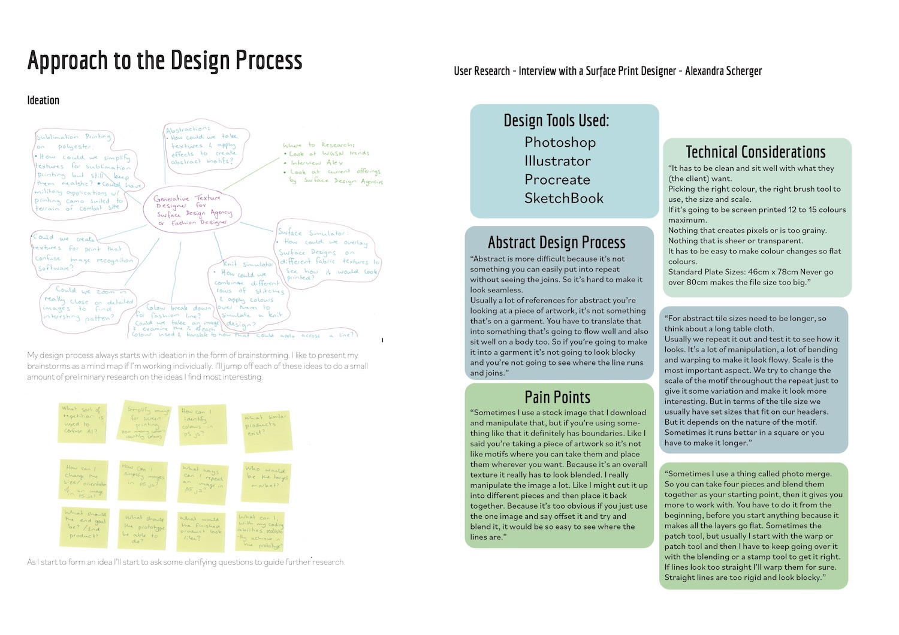
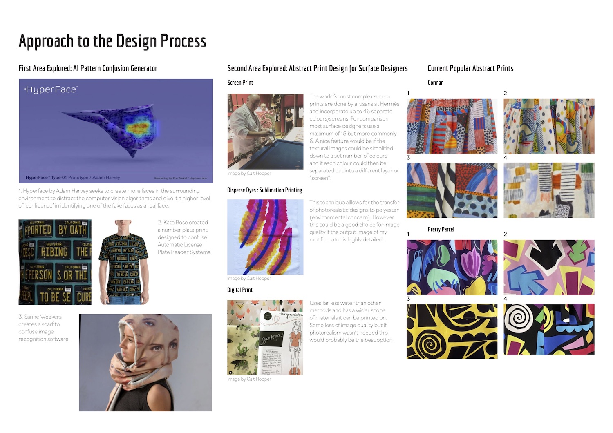
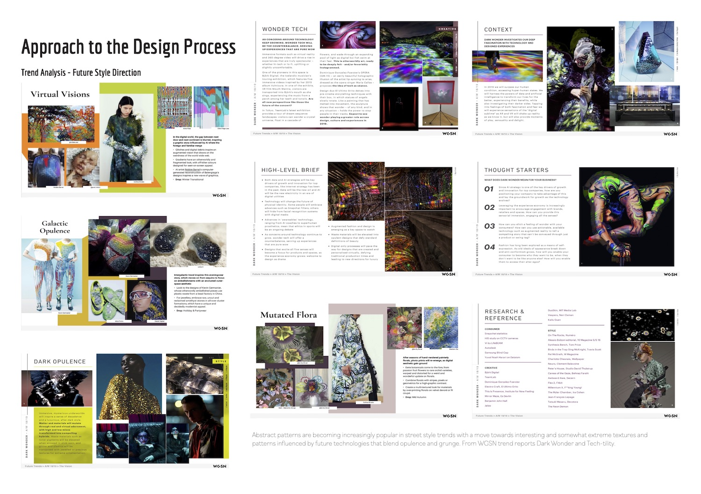
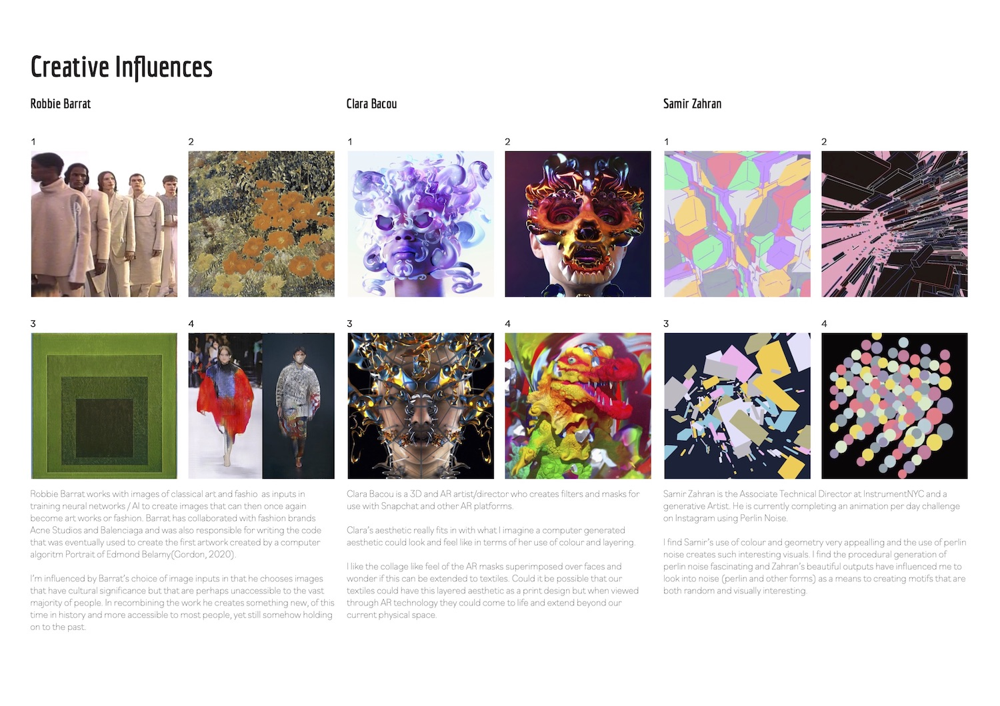
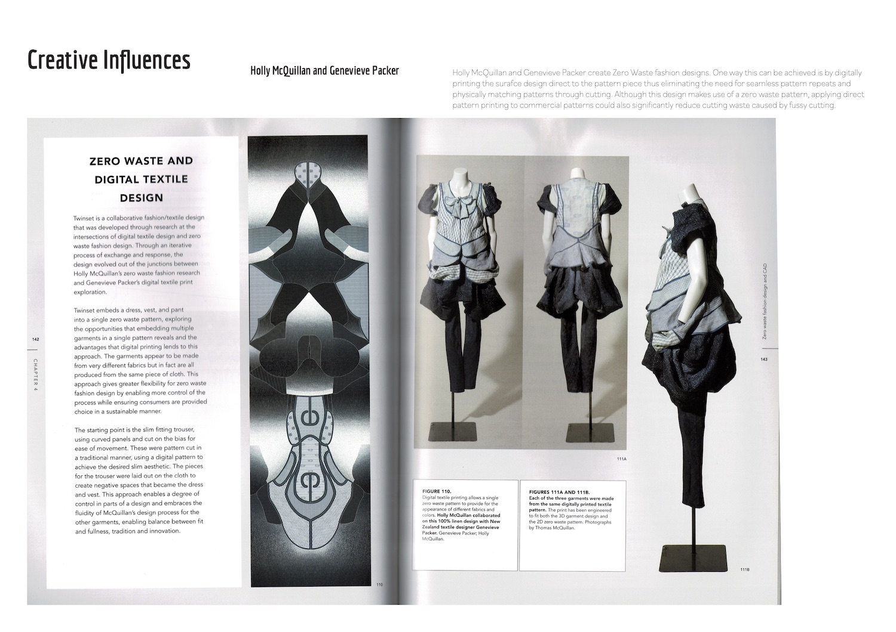
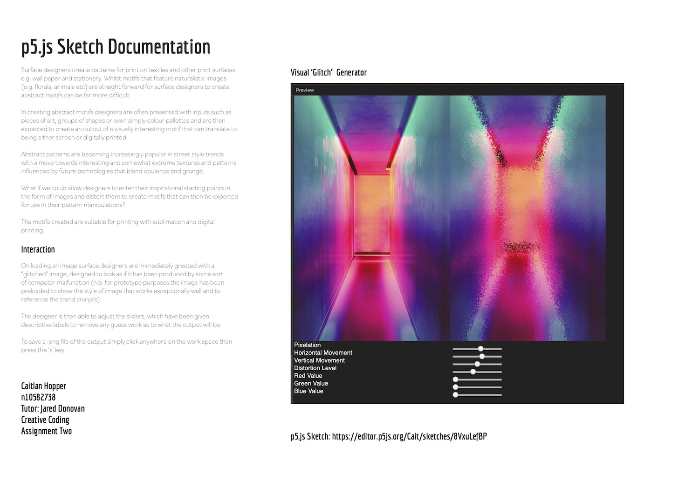

GLITCH MOTIF PROTOTYPE
Individual Project. UXR/UXD
- The Problem
- The Process
- The Outcome
- Reflection
The Problem:
Abstract patterns are becoming increasingly popular in street style trends with a move towards interesting and somewhat extreme textures and patterns influenced by future technologies that blend opulence and grunge.
What if we could enable surface designers to enter their inspirational starting points in the form of images and distort them to create motifs that can be exported for use in their pattern manipulations?
The Process:
- Competitor Analysis
- Brainstorm and Clarifying Questions
- UX Interview
- Literature Review
- Physical Skills Research
- Trend Analysis
- Creative Influences
- Lo-fi Sketches
- JavaScript Coded Prototype Ideation
A competitive analysis of some tools currently used by surface designers and some early lo-fi sketches exploring different interaction potentials
Initial ideation/brainstorm and clarifying questions to help guide further research. Key findings from user research interview with a surface designer.
Over view of literature review conducted and also key findings from previous exploration of physical print making experience.
Trend analysis using fashion industry standard trend forecaster to explore current and upcoming trends in surface design for clothing.
Creative influences that informed the digital outcome stylistically and that explored further potential uses beyond traditional surface design print applications.
And a creative influence for potential application of digital print directly onto garment.
JavaScript mockups used to ideate through potential digital solutions to create a visually interesting outcome.
These were created using p5.js
The Outcome:
The final prototype solution is designed to create a "glitch" like effect to images by distorting the individual pixels using perlin noise.
The pixels can be rearranged and different colour channels targeted in an intuitive process using the sliders
You can explore the final sketch here.
Reflection
To further extend this project I would like to include the ability to upload images so that designers could explore the prototype using their own image. It would also be great to design a more aesthetically pleasing interface.
This project also taught me the value of knowing how to code as it enables me to have greater control over the creative process.
Most importantly though this project has enabled me to learn the technical language required to communicate with developers more clearly